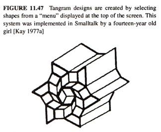

A type of programming in which the program is built from procedures and subroutines.
10 PRINT "Hello World"
This guide is written specifically for the Varvara implementation of the TinyBASIC compiler, but it should still give a general idea of how to use the language's primitives which are also found in most BASIC implementations.
Introduction

A BASIC program begins with line numbers, control-flow is done by jumping to absolute line numbers which point to compiled BASIC code data. 0 is not a valid line number.
15 LET A=0 20 PRINT "Hello BASIC" 25 LET A=A+1 30 IF A=10 GOTO 50 40 GOTO 20 50 END
Some BASIC compilers will do a light compilation where compiled lines hold a link to the following line in memory, as well as byte opcode for each statement.
40 09 00 0f 80 41 3d 30 00 40 1c 00 14 89 22 48 65 6c 6c 6f 20 42 41 53 49 43 22 00 40 27 00 19 80 41 3d 41 2b 31 00 40 39 00 1e 83 41 3d 31 30 20 47 4f 54 4f 20 35 30 00 40 41 00 28 81 32 30 00 40 47 00 32 8a 00 00 00 00 00 00 00 00 00 00
Expressions
Expressions can include numbers, variables and arithmetic operators. Numbers are decimal, but can be prefixed with $ for hexadecimal, there are no precedence rules. Valid expressions arithmetic operators are +-*/%, bitwise operators are &|, logic operators are <>=!. The smallest number is -32768, the largest number is 32767.
10 LET A=6+7 20 PRINT 52+$20*A 30 END
Variables
Variables are single character uppercased letters of the alphabet. Some variables have special properties, here is the complete list:
- H, reads the screen height, or sets the screen height.
- P, reads a value at address, or sets an address.
- R, reads a random number, or set the random number boundary.
- T, reads the time, in seconds.
- W, reads the screen width, or sets the screen width.
For example, if you wanted to do a program to roll a 6-sided dice using the R special variable.
10 LET R=6, D=R 20 PRINT "You rolled " D+1 "." 30 END
Interaction
The INPUT statement, will halt the execution and wait for an input. This can be used to store a value into a variable. For example, to capture the position of the mouse cursor:
10 PRINT "Touch the screen" 20 INPUT X, Y 30 PRINT "You touched at: " X ", " Y 50 PRINT "Press a button" 60 INPUT B 70 PRINT "You pressed: " B 80 END
To exit an INPUT loop, press the home, or select buttons.
Statements
RUN | Used to begin program execution at the lowest line number. |
|---|---|
RUN | |
REM | Permits to add remarks to a program source. |
REM This is a comment. | |
LIST | Causes part or all of the user program to be listed. If no parameters are given, the whole program is listed. A single expression parameter in evaluated to a line number which, if it exists, is listed. |
LIST 200 | |
CLEAR | Formats the user program space, deleting any previous programs. If included in a program the program becomes suicidal when the statement is executed. |
CLEAR | |
INPUT | Halts evaluation, and assigns the result of expressions to each of the variables listed in the argument. Expressions are entered sequencially and separated by a line break, a list of two arguments, will expect two input lines. |
INPUT X, Y | |
LET | Assigns the value of an expression to a variable. |
LET A=123/2, B=$20%2 | |
IF | If the result of the expression is not zero, the statement is executed; if False, the associated statement is skipped. |
IF A>B-2 PRINT "A is greater." | |
PRINT | Prints the values of the expressions and/or the contents of the strings in the console. To print the result of an expression as an ascii character, use '$41, to print the character A. |
PRINT "The result is: " A+B | |
GOTO | Changes the sequence of program execution. |
GOTO 50+A>B | |
GOSUB | Changes the sequence of program execution, and remembers the line number of the GOSUB statement, so that the next occurrence of a RETURN statement will result in execution proceeding from the statement following the GOSUB. |
GOSUB 220 | |
RETURN | Transfers execution control to the line following the most recent unRETURNed GOSUB. If there is no matching GOSUB an error stop occurs. |
RETURN | |
END | Must be the last executable statement in a program. Failure to include an END statement will result in an error stop after the last line of the program is executed. |
END |
Display
There is a handful of routines to draw graphics on the screen, to learn more about the limitations of the display, see the Varvara Screen Specs.
COLOR | Sets the interface RGB colors, see theme. |
|---|---|
COLOR $50f2, $b0f9, $a0f8 | |
CLS | Clears the screen. |
CLS | |
DRAW | Sets position of drawing. |
DRAW 100, 320 | |
MODE | Sets drawing mode, see varvara. |
MODE 04 | |
SPRITE | Draws a sprite, uses MODE. |
SPRITE $1c1c, $087f, $0814, $2241 | |
PICT | Draws a picture from a file, uses MODE. |
PICT image10x10.icn |
Memory
Varvara BASIC is able to read and write source files, as well as export compatible roms.
SAVE | Exports your program to example.bas. |
|---|---|
SAVE example.bas | |
LOAD | Imports the example.bas program, replaces your current program. |
LOAD example.bas | |
MAKE | Exports your program as a Varvara rom. |
MAKE game.rom | |
POKE | Writes the value of expression B at address A in memory. |
POKE A, B |
Pascal is an imperative and procedural programming language designed for teaching students structured programming.
My main interest in the language is building little Macintosh applications such as graf3dscene, and exploring the THINK Pascal 4.0.2 environment. I have saved many example files in the Macintosh Cookbook repository.
THINK Pascal is a development system for the Macintosh, released by Think Technologies in 1986 as Lightspeed Pascal. Think Technologies was bought by Symantec, and the name was changed to Think Pascal. The last official update came 1992, and the product was officially discontinued in 1997.
Styleguide
A project should include the Runtime.lib library containing all standard Pascal routines such as writeln and sqrt. The interface.lib library contains the glue code for the all Macintosh Toolbox. Since routines from these two libraries are commonly used in almost all Pascal programs on the Macintosh, they are automatically included in the project file.
The standard adopted here concerns the naming of procedures, functions, and variables which both always start with an uppercase letter. Each new word within a name should also start with an uppercase letter. For example, GetNewWindow or SeekSpindle are fine function and procedure names; badPrcName isn't.
Variables always start with a lowercase letter. Use variable names like firstEmployee and currentTime. Global variables(variables accessible to your entire program) should start with a lowercase "g", like gCurrentWindow and gDone. The use of variable names such as glk and swpCk7 is discouraged.
program Example;
{Comment}
var
name: STRING;
begin
ShowText;
name := 'alice';
if (name = 'alice') then
Writeln('The name is alice.')
else if (a = 'bob') then
Writeln('The name is bob.')
else
Writeln('The name is not alice nor bob.');
end.
Creating a procedure
A procedure definition in Pascal consists of a header, local declarations and a body of the procedure. The procedure header consists of the keyword procedure and a name given to the procedure. A procedure does not return anything.
program ExampleProcedure; procedure DrawLine (x1, y1, x2, y2: INTEGER); begin Moveto(x1, y1); Lineto(x2, y2); end; begin ShowDrawing; DrawLine(20, 20, 100, 100); end.
Creating a function
A function declaration tells the compiler about a function's name, return type, and parameters. A function definition provides the actual body of the function.
program ExampleFunction;
function Add (a, b: INTEGER): INTEGER;
begin
add := a + b;
end;
begin
ShowText;
Writeln('5+6=', Add(5, 6));
end.
Creating a type
An Object is a special kind of record that contains fields like a record; however, unlike records, objects contain procedures and functions as part of the object. These procedures and functions are held as pointers to the methods associated with the object's type.
program ExampleType;
type
Rectangle = object
width, height: INTEGER;
end;
var
r1: Rectangle;
begin
ShowText;
New(r1);
r1.width := 12;
r1.height := 34;
Writeln('The rect is ', r1.width : 2, 'x', r1.height : 2);
end.
Creating a type with a method
program ExampleMethod;
type
Rectangle = object
width, height: INTEGER;
procedure setwidth (w: INTEGER);
end;
var
r1: Rectangle;
procedure Rectangle.setwidth (w: INTEGER);
begin
width := w;
end;
begin
ShowText;
New(r1);
r1.width := 12;
r1.height := 34;
Writeln('The rect was ', r1.width : 2, ' x ', r1.height : 2);
r1.setWidth(56);
Writeln('The rect is now ', r1.width : 2, ' x ', r1.height : 2);
end.
Creating a unit
To include the unit in another project, add uses ExampleUnit right after program Example, the procedures declared in the interface will become available.
unit ExampleUnit; interface procedure DrawLine (x1, y1, x2, y2: INTEGER); implementation procedure DrawLine (x1, y1, x2, y2: INTEGER); begin Moveto(x1, y1); Lineto(x2, y2); end; end.
Console Program
program ExampleConsole;
const
message = ' Welcome to the world of Pascal ';
type
name = STRING;
var
firstname, surname: name;
begin
ShowText;
Writeln('Please enter your first name: ');
Readln(firstname);
Writeln('Please enter your surname: ');
Readln(surname);
Writeln;
Writeln(message, ' ', firstname, ' ', surname);
end.
GUI Program
program ExampleGUI;
var
w: WindowPtr; {A window to draw in}
r: Rect; {The bounding box of the window}
begin
SetRect(r, 50, 50, 200, 100);
w := NewWindow(nil, r, '', true, plainDBox, WindowPtr(-1), false, 0);
SetPort(w);
MoveTo(5, 20);
DrawString('Hello world!');
while not Button do
begin
end;
end.
Graphics Primitives
Graphical user interface design rests firmly on the foundation of OOP and illustrates its power and elegance.
| Object | Pascal | Description |
| Pen | PenSize(width, height:INTEGER) | Sets the size of the plotting pen, in pixels |
| Pen- move absolute | MoveTo(h,v: INTEGER) | Moves pen (invisibly) to pixel (h,v) (absolute coordinates) |
| Pen- move relative | Move(dh,dv: INTEGER) | Moves pen (invisibly) dh pixels horizontally and dv pixels vertically (relative coordinates) |
| Point | DrawLine(x1,y1, x1,y1:INTEGER) | Draws a line from point (x1,y1) to the second point, (x1,y1), i.e. a point |
| Point | MoveTo(x1,y1: INTEGER) Procedure LineTo(x1,y1: INTEGER) |
Moves to pixel (x1,y1) and draws a line to (x1,y1), i.e. a point |
| Point | Line(dx,dy: INTEGER) | From the present position of the pen, draw a line a distance (0,0) |
| Line - absolute | DrawLine(x1,y1, x2,y2:INTEGER) | Draws a line from point (x1,y1) to the second point, (x2,y2) |
| Line - absolute | MoveTo(x1,y1: INTEGER) Procedure LineTo(x2,y2: INTEGER) |
Moves to pixel (x1,y1) and draws a line to (x2,y2) |
| Line - relative | Line(dx,dy: INTEGER) | Draw a line a distance (dx,dy) relative to the present pen position |
| Text | WriteDraw(p1) | The WriteLn equivalent procedure for the drawing window |
| Drawing Window | Procedure ShowDrawing | Opens the Drawing Window |
Graphic Primitives Example
program Primitives;
{Program to demonstrate Pascal point & line primitives.}
begin
ShowDrawing; {Opens Drawing Window}
{First draw three points by three different functions}
PenSize(1, 1); {Sets pen size to 1 x 1 pixels}
DrawLine(50, 50, 50, 50);
WriteDraw(' Point at (50,50) using DrawLine');
PenSize(2, 2);
MoveTo(100, 75); {Absolute move}
LineTo(100, 75);
WriteDraw(' Point at (100,75) using LineTo');
PenSize(3, 3);
MoveTo(150, 100); {Absolute move}
Line(0, 0);
WriteDraw(' Point at (150,100) using Line');
{Now Draw three lines by three different functions}
MoveTo(150, 175); {Absolute move}
WriteDraw('Line drawn with DrawLine');
DrawLine(150, 125, 50, 225);
PenSize(2, 2);
Move(0, 25); {Relative move}
LineTo(150, 250);
WriteDraw('Line drawn by LineTo');
Pensize(1, 1);
Move(0, 25); {Relative move}
Line(-100, 50);
WriteDraw('Line drawn by Line');
end.
Graphics Primitives - Geometric Figures
| Rectangles (Squares) |
Ovals (Circles) |
Rounded-Corner Rectangles |
Arcs and Wedges |
|
| Frame | ProcedureFrameRect(r:Rect) | ProcedureFrameOval(r:Rect) | Frame Round Rect (r:Rect; ovalWidth, ovalHeight:Integer) | FrameArc (r:Rect;startAngle, arcAngle:Integer) |
| Paint | PaintRect(r:Rect) | PaintOval(r:Rect) | Paint Round Rect(r:Rect; ovalWidth, ovalHeight:Integer) | PaintArc (r:Rect;startAngle, arcAngle:Integer) |
| Erase | EraseRect(r:Rect) | EraseOval(r:Rect) | Erase Round Rect(r:Rect; oval Width, ovalHeight:Integer) | EraseArc (r:Rect;startAngle, arcAngle:Integer) |
| Invert | InvertRect(r:Rect) | InvertOval(r:Rect) | Invert Round Rect(r:Rect; ovalWidth, ovalHeight:Integer) | InvertArc (r:Rect;startAngle, arcAngle:Integer) |
| Fill | FillRect(r:Rect, pat:Pattern) | FillOval(r:Rect,pat:Pattern) | FillRound Rect(r:Rect; ovalWidth, ovalHeight:Integer, pat:Pattern) | FillArc (r:Rect;startAngle, arcAngle:Integer, pat:Pattern) |
Spiral Pattern
program EulerSpiral; const l = 4; a = 11; var wx, wy, wa: real; i: INTEGER; procedure DrawLineAngle; var t: REAL; begin MoveTo(round(wx), round(wy)); t := wa * PI / 180; wx := wx + l * cos(t); wy := wy + l * sin(t); wa := wa + (i * a); LineTo(round(wx), round(wy)); end; begin wx := 100; wy := 300; i := 0; ShowDrawing; repeat DrawLineAngle; i := i + 1; until i > 20000; end.
Button Events
| Object | Pascal Syntax | Example Call | Description |
| Button | Function Button:Boolean | if Button then º elseº |
The Button function returns True if the mouse button is down; False otherwise |
| Button | Function StillDown: Boolean | if StillDown thenº elseº |
Returns True if the button is still down from the original press; False if it has been released or released and repressed (i.e., mouse event on event queue) |
| Button | Function WaitMouseUp:Boolean | if WaitMouseUp thenº elseº |
Same as StillDown, but removes previous mouse event from queue before returning False |
| Mouse cursor | GetMouse(var mouseLoc:Point) | GetMouse(p); | Returns the present mouse cursor position in local coordinates as a Point type |
| Pixel Value | Function GetPixel(h,v:point:Integer): Boolean | GetPixel(10,10); | Returns the pixel at position. |
| Keyboard | GetKeys(var theKeys:KeyMap) | GetKeys(key); | Reads the current state of the keyboard and returns a keyMap, a Packed Array[1..127] of Boolean |
| Clock | Function TickCount:LongInt | if TickCount<60 thenº | Returns the total amount of a 60th of a second since the computer was powered on. |
| Event | Function GetNextEvent (eventMask:Integer;var theEvent:EventRecord): Boolean |
if GetNextEvent(2,Rec) thenº elseº |
A logical function which returns True if an event of the requested type exists on the event queue; False otherwise. If True, it also returns a descriptive record of the event. (type, location, time, conditions, etc) |
Notes
A semi-colon is not required after the last statement of a block, adding one adds a "null statement" to the program, which is ignored by the compiler.
The programmer has the freedom to define other commonly used data types (e.g. byte, string, etc.) in terms of the predefined types using Pascal's type declaration facility, for example:
type byte = 0..255; signed_byte = -128..127; string = packed array[1..255] of char;
If you are using decimal (real type) numbers, you can specify the number of decimal places to show with an additional colon:
Writeln(52.234567:1:3);
The 'whole number' part of the real number is displayed as is, no matter whether it exceeds the first width (in this case 1) or not, but the decimal part is truncated to the number of decimal places specified in the second width. The previous example will result in 52.234 being written.
Patterns
The available patterns are:
- black
- dkgray
- gray
- ltgray
- white
The following Think Pascal commands will be useful to you in writing interactive graphics programs on the Macintosh. They are listed by type:
Window Commands
| ShowDrawing | Open the drawing window (if not already open) and make it the active window on the screen. Should be used when first draw to drawing window and anytime shift from text to drawing window. |
| ShowText | Similarly for the text window. |
| HideAll | Closes all Think Pascal windows on the screen. |
| SetDrawingRect(WindowRect) | Set Drawing Window to fit WindowRect |
| SetTextRect(WindowRect) | Set Text Window to fit WindowRect |
Writing words on the screen:
| Writeln('text') | Prints text to the Text Window and moves cursor to next line. |
| Writeln(INTEGER) | Prints INTEGER in the Text Window and moves cursor to next line. |
| Writeln(INTEGER : d ) | Prints INTEGER in the Text Window using at least d spaces and then moves cursor to next line. |
| Write('text') | Prints text to the Text Window but does not move cursor to next line. |
| WriteDraw('text') | Prints text to the Drawing Window, starting at the CP. The CP is left at the lower right corner of the last character drawn. |
Builtin Types
| Type | Records |
| Rect | left, top, right, bottom : INTEGER |
| Point | h, v : INTEGER |
Builtin Procedures
| SetPt(VAR pt : Point; h,v : INTEGER) | Make point, pt,with coords (h,v) |
| SetRect(VAR r : Rect; left, top, right, bottom : INTEGER) | Make rectangle with coords (left,top) and (right,bottom) as corners. |
| OffSetRect(VAR r : Rect; left, top : INTEGER) | Change rectangle to coords (left,top). |
| InSetRect(VAR r : Rect; right, bottom : INTEGER) | Change rectangle to coords (left,top). |
| Pt2Rect( pt1, pt2 : Point; dstRect : Rect); | Make rectangle with pt1 and pt2 as corners |
| PtInRect(pt:Point; r : Rect) : BOOLEAN; | Determine if pt is in the rectangle r. |
String Procedures
| NumToString(theNum: LongInt, theString: str255); | Converts a number to a string. |
| StringToNum(theString: str255, theNum: LongInt); | Converts a string to a number. |
| Concat(theString1, theString2, theString3, ..: string); | Combines strings. |
Bit Operations
| Band(n, i : longint) : boolean |
| Btst(n, i : longint) : boolean |
| Bxor(i, j : longint) : longint |
| Bor(n, i : longint) : longint |
| Bsl(n, i : longint) : longint |
| Bsr(n, i : longint) : longint |
Syntax
^Shapeis a type which is a pointer to the type ShapemyShape^takes a ^Shape and dereferences the pointer into a value@myShapetakes a Shape and captures its address, giving you a ^Shapevar myShapeShape is part of a argument declaration which means that the argument is passed as a reference, allowing the called procedure to modify it
Customization
If you are using THINK Pascal 4.0.2, as opposed to 4.5d4, the select all shortcut will be missing, and the default build shortcut will be ⌘G, instead of ⌘R. To change the menu shortcuts, open THINK Pascal with ResEdit, and add the missing shortcuts to the MENU resource. Remove the ⌘A shortcut from the Seach Again menu.
Going Further
The absolute best books on THINK Pascal are:
- Macintosh Pascal Programming Primer, Dave Mark & Cartwright Reed
- Programming in Macintosh and Think Pascal, Richard A. Rink & Vance B. Wisenbaker
- THINK Pascal: User Manual, Symantec. Inc
- Pascal Reference Manual, Apple Computer. Inc
C is the native language of Unix. It has come to dominate systems programming in the computer industry.
Work on the first official C standard began in 1983. The major functional additions to the language were settled by the end of 1986, at which point it became common for programmers to distinguish between "K&R C" and ANSI C.
People use C because it feels faster. If you build a catapult that can hurl a bathtub with someone inside from London to New York, it will feel very fast both on take-off and landing, and probably during the ride, too, while a comfortable seat in business class on a transatlantic airliner would probably take less time but you would not feel the speed nearly as much. ~
One good reason to learn C, even if your programming needs are satisfied by a higher-level language, is that it can help you learn to think at hardware-architecture level. For notes specific to the Plan9's C compiler, see Plan9 C.
Compile
To convert source to an executable binary one uses a compiler. My compiler of choice is tcc, but more generally gcc is what most toolchains will use on Linux.
cc -Wall -lm -o main main.c
#include <stdio.h>
#include <stdlib.h>
#include <math.h>
int count = 10;
int
add_together(int x, int y)
{
int result = x + y;
return result;
}
typedef struct {
int x;
int y;
int z;
} point;
void
print_point(point point)
{
printf("the point is: (%d,%d,%d)\n",point.x,point.y,point.z);
}
int
main(int argc, char** argv)
{
point p;
p.x = 2;
p.y = 3;
p.z = 4;
float length = sqrt(p.x * p.x + p.y * p.y);
printf("float: %.6f\n", length);
printf("int: %d\n", p.z);
print_point(p);
return 0;
}
Include
Generally, projects will include .h files which in turn will include their own .c files. The following form is used for system header files. It searches for a file named file in a standard list of system directories.
#include <file>
The following form is used for header files of your own program. It searches for a file named folder/file.h in the directory containing the current file.
#include "folder/file.h"
IO
One way to get input into a program or to display output from a program is to use standard input and standard output, respectively. The following two programs can be used with the unix pipe ./o | ./i
o.c
#include <stdio.h>
int
main()
{
printf("(output hello)");
return 0;
}
i.c
#include <stdio.h>
int
main()
{
char line[256];
if(fgets(line, 256, stdin) != NULL) {
printf("(input: %s)\n", line);
}
return 0;
}
Threads
Threads are a way that a program can spawn concurrent operations that can then be delegated by the operating system to multiple processing cores.
cc threads.c -o threads && ./threads
#include#include #include #define NTHREADS 5 void *myFun(void *x) { int tid; tid = *((int *) x); printf("Hi from thread %d!\n", tid); return NULL; } int main(int argc, char *argv[]) { pthread_t threads[NTHREADS]; int thread_args[NTHREADS]; int rc, i; /* spawn the threads */ for (i=0; i<NTHREADS; ++i) { thread_args[i] = i; printf("spawning thread %d\n", i); rc = pthread_create(&threads[i], NULL, myFun, (void *) &thread_args[i]); } /* wait for threads to finish */ for (i=0; i<NTHREADS; ++i) { rc = pthread_join(threads[i], NULL); } return 1; }
SDL
cc demo.c -I/usr/local/include -L/usr/local/lib -lSDL2 -o demo
To compile the following example, place a graphic.bmp file in the same location as the c file, or remove the image block.
#include <SDL2/SDL.h>
#include <stdio.h>
int
error(char* msg, const char* err)
{
printf("Error %s: %s\n", msg, err);
return 1;
}
int
main()
{
SDL_Window* window = NULL;
SDL_Surface* surface = NULL;
SDL_Surface* image = NULL;
if(SDL_Init(SDL_INIT_VIDEO) < 0)
return error("init", SDL_GetError());
window = SDL_CreateWindow("Blank Window",
SDL_WINDOWPOS_UNDEFINED,
SDL_WINDOWPOS_UNDEFINED,
640,
480,
SDL_WINDOW_SHOWN);
if(window == NULL)
return error("window", SDL_GetError());
surface = SDL_GetWindowSurface(window);
SDL_FillRect(surface, NULL,
SDL_MapRGB(surface->format, 0x72, 0xDE, 0xC2));
/* Display an image */
image = SDL_LoadBMP("graphic.bmp");
if(image == NULL)
return error("image", SDL_GetError());
SDL_BlitSurface(image, NULL, surface, NULL);
/* Draw canvas */
SDL_UpdateWindowSurface(window);
SDL_Delay(2000);
/* close */
SDL_FreeSurface(surface);
surface = NULL;
SDL_DestroyWindow(window);
window = NULL;
SDL_Quit();
return 0;
}
Misc
String padding: |Hello |
printf("|%-10s|", "Hello");
Macros
#define MIN(a, b) (((a) < (b)) ? (a) : (b)) #define MAX(a, b) (((a) > (b)) ? (a) : (b)) #define ABS(a) (((a) < 0) ? -(a) : (a)) #define CLAMP(x, low, high) (((x) > (high)) ? (high) : (((x) < (low)) ? (low) : (x)))
People use C because it feels faster. Like, if you build a catapult strong enough that it can hurl a bathtub with someone crouching inside it from London to New York, it will feel very fast both on take-off and landing, and probably during the ride, too, while a comfortable seat in business class on a transatlantic airliner would probably take less time but you would not feel the speed nearly as much.Erik Naggum
Hypertalk is the programming language used in the mac software Hypercard.
Hypertalk can be emulated easily using a Macintosh emulator, the default Hypercard canvas size is 512x342.
For most basic operations including mathematical computations, HyperTalk favored natural-language ordering of predicates over the ordering used in mathematical notation. For example, in HyperTalk's put assignment command, the variable was placed at the end of the statement:
put 5 * 4 into theResult
Go
The go command can be used in two ways. It can allow the user to go to any card in the stack that it is in or to any card of any other stack that is available.
visual effect dissolve go to card id 3807
Put/Set
To change the text value, or textstyle of a field:
on mouseUp put random(100) into card field "target" set the textstyle of card field "Title" to italic end mouseUp
Alternative, one can use the "type" command if the programmer wants to simulate someone typing something into a field. The type command will do very well here:
on mouseUp select before first line of card field "target" type "hello there" end mouseUp
Show/Hide
The hide command can be used to hide any object. Some examples are: buttons, fields, and the menubar. The opposite of the hide command is the show command, and it can be used to make an object show up again.
-- a comment onmouseUp hide card field "title" wait 5 seconds show card field "title" endmouseUp
Choose
Each of the tools in the tool menu has a name that can be used with this command.
onmouseUp choose spray can tool set dragSpeed to 150 drag from 300,100 to 400, 200 wait 1 second choose eraser tool drag from 300,100 to 400, 200 choose browse tool endmouseUp
The available tools are:
- browse
- brush
- bucket
- button
- curve
- eraser
- field
- lasso
- line
- oval
- pencil
- rect[angle]
- reg[ular] poly[gon]
- round rect[angle]
- select
- spray
- text
Modal
Basic
on mouseUp ask "What is your name?" put it into response answer "You said " & response end mouseUp
Logic with input
on mouseUp
ask "What is your name?"
put it into response
if response is "blue" then
answer "correct."
else
answer "incorrect."
end if
end mouseUp
Logic with choices
on mouseUp
answer "Which color?" with "cyan" or "magenta" or "yellow"
if it is "cyan" then
answer "You selected cyan."
else
answer "You did not select cyan."
end if
end mouseUp
Play
The play command plays the specified sequence of notes with the specified sampled sounds. The tempo parameter specifies the number of quarter notes per minute; the default value is 120.
play "harpsichord" "c4 a3 f c4 a3 f c4 d c c c"
Globals
The global command is used to specify variables which will be available to other scripts within the stack or even in another stack. Unless variables are declared a global, they are considered by HyperTalk as local which means that they may only be used within a single script. If they are global, they may be carried to other scripts. Variables must be identified before they are used in order for them to become global.
-- allow access to globals global var1, var2, .. answer "hello " & var1 & "."
Summary
-- Let's put it altogether now
on mouseUp
put random of 100 into n
repeat 6
ask "please input number(1-100)?"
if it < n then
answer "more than" && it
else if it > n then
answer "less than" && it
else if it is n then
answer "perfect!"
exit mouseUp
end if
end repeat
answer "You lose, myy answer is " && n
end mouseUp